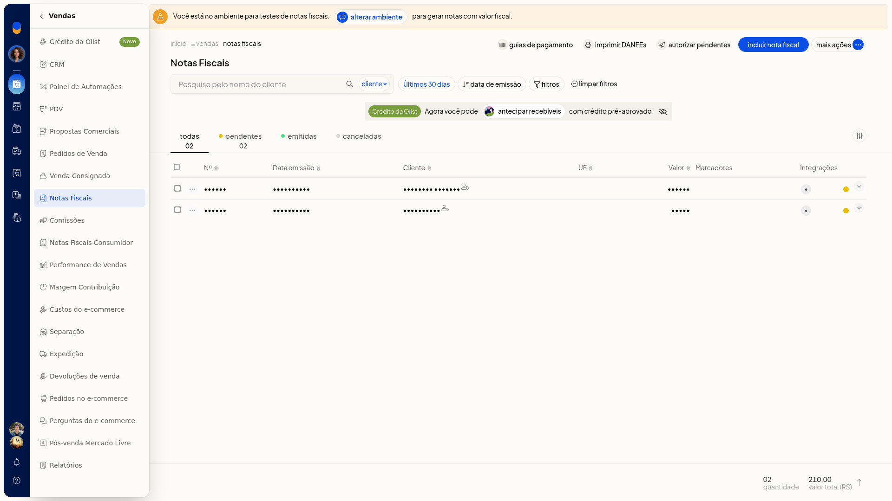
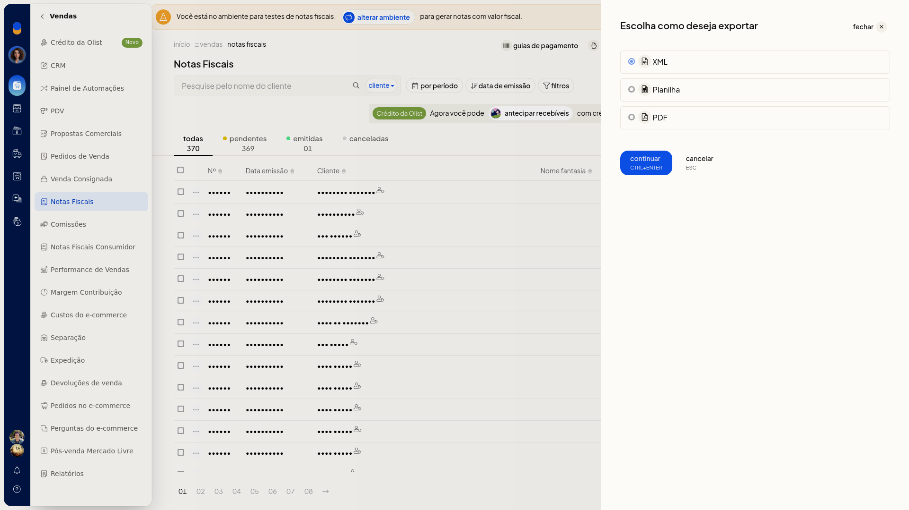
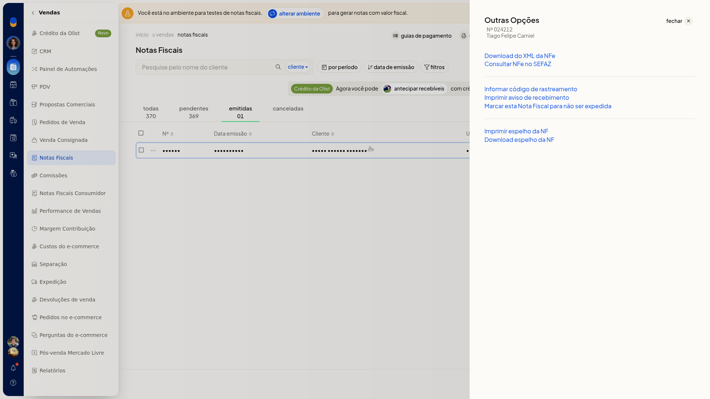

Exportar e baixar XML
Importante
- Download do XML da NFe aparece em Outras opções da nota emitida. Na nota pendente, essa opção não aparece.


Instruções
Exportar pela lista
-
Acesse Vendas > Notas Fiscais.

-
Abra Mais ações e escolha Exportar notas fiscais.

-
No diálogo, selecione XML. Os outros formatos do diálogo são Planilha e PDF.

Baixar o XML de uma nota emitida
-
Acesse Vendas > Notas Fiscais.
-
Na linha da nota emitida, abra o menu de ações e entre em Outras opções.

-
Clique em Download do XML da NFe para baixar o XML dessa nota.